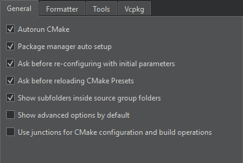
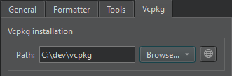

vcpkg Package Manager
The experimental vcpkg plugin integrates the vcpkg C/C++ package manager.
vcpkg is available on all the supported development platforms.
You can use Qt Creator to create and edit vcpkg.json files to specify packages to build as part of your project when using CMake as the build system.
Note: Enable the Vcpkg plugin to use it.
Setting vcpkg Preferences
By default, vcpkg is automatically set up for use with CMake. To disable automatic setup, select Preferences > CMake > General > Package manager auto setup.

To set the Path to the directory where you installed vcpkg, select Preferences > CMake > Vcpkg.

Select to download vcpkg if you have not installed it yet.
See also Create vcpkg manifest files, Edit vcpkg manifest files, and Enable and disable plugins.